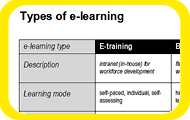
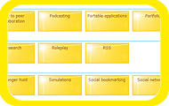
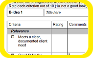
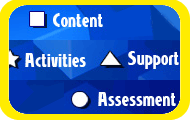
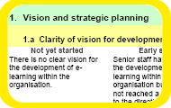

Welcome to Designing e-learning
This site provides some answers to two big questions:
- What is e-learning?
the Gallery of strategies has over 100 click-and-view samples plus teaching guides - How do you do it?
the Learning design and Learning materials sections offers detailed sample designs and course maps
Browse — or take a tour
To help you find what you’re looking for, we've organised a range of different e-tours through the resources on this site. Click on the itinerary to start a tour. Independent e-travellers can just head for the Gallery of strategies, the Learning designs or the Learning materials sections and start exploring.
Download the guides (ZIP file with docs for all tours 5MB) you need for all tours, or select the travel pack for each tour when you view its itinerary.
|  | Tour 1: Get started in e-learningJust the ticket to get your bearings – find out about the main types of e-learning, some key tools and delivery methods, and look inside a sample course. |
|  | Tour 2: Explore e-technologiesCut to the chase if you just want to find your way around the range of tools and systems which can be used for e-learning. |
|  | Tour 3: Plan an e-learning initiativeDo a reality check on your e-learning options and ideas and plan for success. |
|  | Tour 4: Design an e-learning courseWalk through the steps involved in getting the 'best fit' e-learning solution for you, your learners and your organisation. |
|  | Tour 5: Develop an e-learning plan |